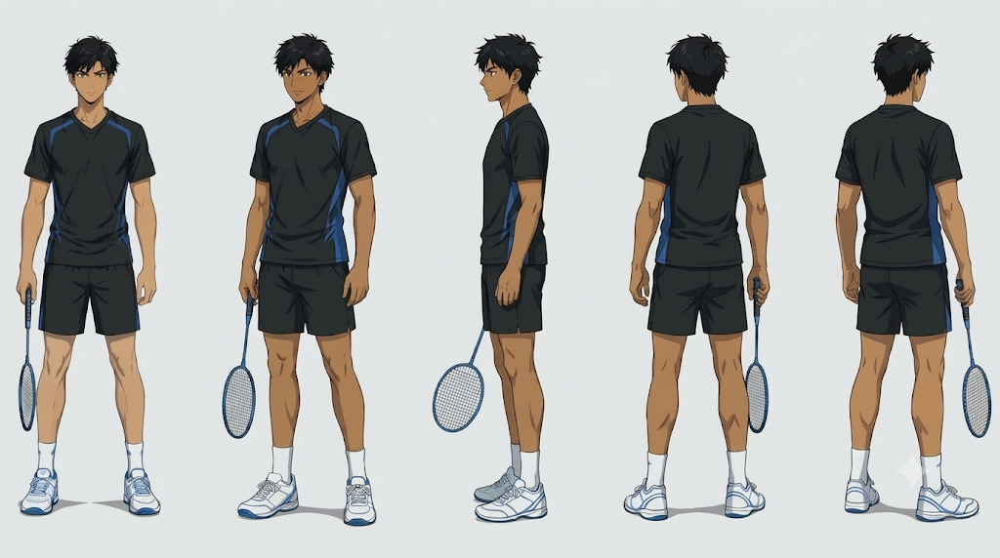

- ON THE COURT
- IN THE STORY
ANIMATED SHORT · 4 MIN 17 SEC
AN ORIGINAL SPORTS ANIME SHORT · BY AMLESH SAHOO
Across the net stood his friend.
His toughest opponent was the pressure within.
AN ORIGINAL SPORTS ANIME SHORT
A player. A rival. A mentor.
And the people who remind him why he plays.
Meet the cast before you step onto the court.

ANIMATED SHORT · 4 MIN 17 SEC
CHARACTER STUDIES
A closer look at the faces behind the story.
AMLESH · ADITYA · RISHI
MOTHER · FATHER
THE STORY BEHIND THE SCORE